WhyFind
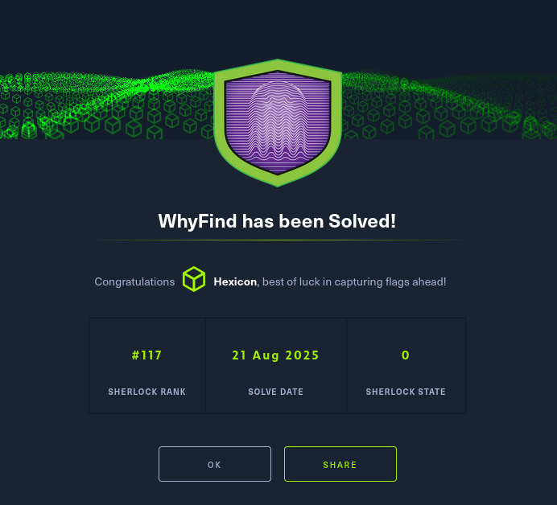
We have been hot on the trail for a political dissident. They jump from café to café using the Wi-Fi making it hard to nab them.
During one of their trips, they unknowingly sat next to one of our agents and we captured them with their laptop on.
We need to know where they have been and what they have been doing. Analyze the KAPE output and see if you can get us some answers.
Task 1
What is the Computer name of the machine?
The challenge archive contains a single KAPEOUT.zip | ~1.5GB in size archive. After unzipping it, the captured machine's filesystem is revealed, starting from the C drive.
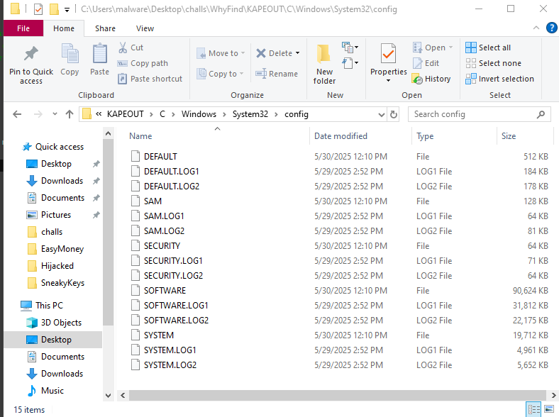
I have a full set of system hives to use. The information about the computer itself will be located within the SYSTEM hive, which stores system-wide configuration settings that apply to all users on the machine.
RECmd.exe -f C:\Users\malware\Desktop\challs\WhyFind\KAPEOUT\C\Windows\System32\config\SYSTEM --sa ComputerName
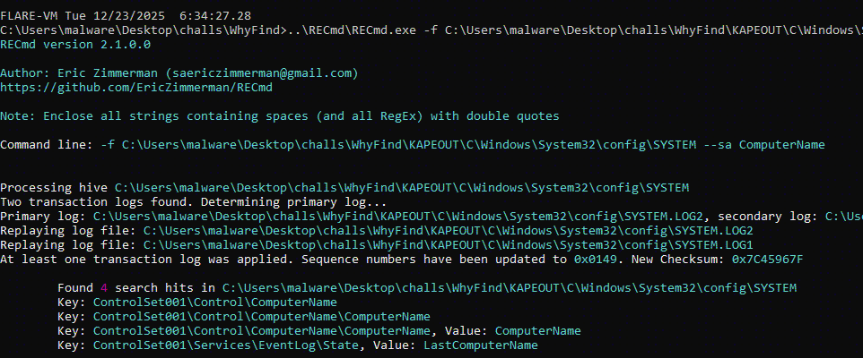
There are 4 matching keys/subkeys. The ControlSet001\Control\ComputerName\ComputerName key looks like the exact thing I've been looking for, so I'll read its values.
RECmd.exe -f C:\Users\malware\Desktop\challs\WhyFind\KAPEOUT\C\Windows\System32\config\SYSTEM --kn ControlSet001\Control\ComputerName\ComputerName
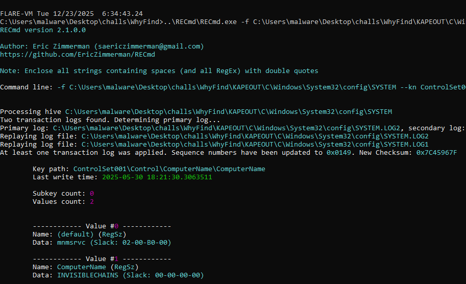
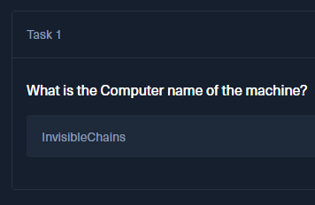
Task 2
What is the first Wi-Fi SSID(Decoded) they connected to on May 30th 2025?
Information about the networks a Windows device has connected to is stored in the SOFTWARE hive, under the Microsoft\Windows NT\CurrentVersion\NetworkList\Profiles key.
RECmd.exe -f C:\Users\malware\Desktop\challs\WhyFind\KAPEOUT\C\Windows\System32\config\SOFTWARE --kn "\Microsoft\Windows NT\CurrentVersion\NetworkList\Profiles"
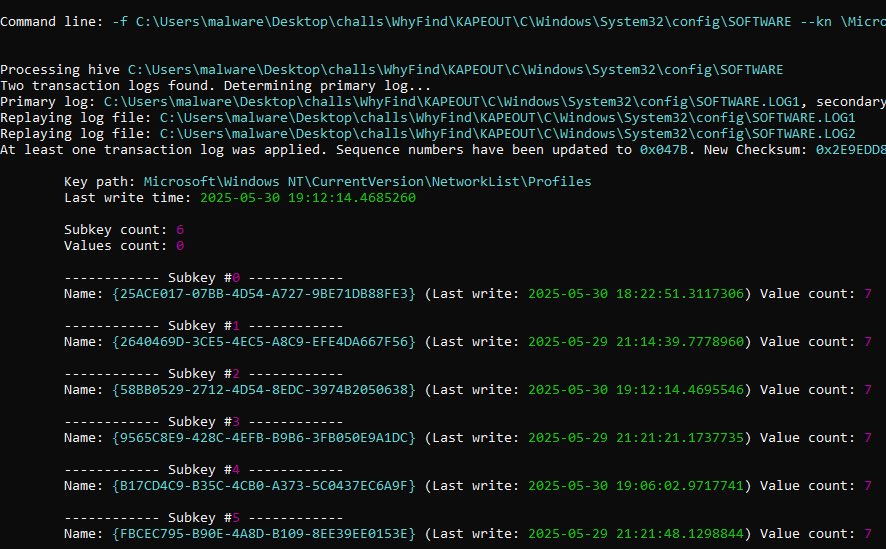
This key contains a list of Wi-Fi networks that the device has connected to. Looking at the last write times, I can tell which networks have been used on the 30th of May, and which one came first.
RECmd.exe -f C:\Users\malware\Desktop\challs\WhyFind\KAPEOUT\C\Windows\System32\config\SOFTWARE --kn "\Microsoft\Windows NT\CurrentVersion\NetworkList\Profiles\{25ACE017-07BB-4D54-A727-9BE71DB88FE3}"
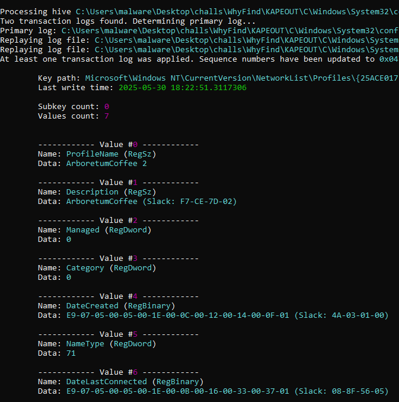
The network name is ArboretumCoffee 2, but the answer is just ArboretumCoffee. Why is there a 2? Here is an example situation:
Alice owns a router(router1) that broadcasts the WiFi with an SSID of HOME. Upon the first connection to this network, Windows will save the settings for the network's gateway into a GUID-like directory.
After a few weeks, Alice decides to upgrade her router, and buys another one(router2), and sets it up so that it broadcasts the WiFi with the exact same SSID. Instead of using the old, potentially incompatible options for the new device, Windows does something smart.
For each new network, a signature will be made by combining the gateway device's MAC address and the SSID, and then used to verify against the ProfileList(where we've seen the plaintext SSID without decoding) to map the correct settings to appropriate devices.
When the device connects to a new network with an SSID that is already mapped in the registry, Windows will see that the SSID matches an existing record, but the MAC does not. As a result, a separate settings list will be created for Home 2, ensuring that both devices have their correct settings saved. This is handled by the NLA (Network Location Awareness) service.
This tells me that the suspect had connected to the ArboretumCoffee network before, which in turn means that they had visited the cafe before. On the 30th of May, they connected to a different access point, which used the same SSID (Could be the cafe itself replacing the device with a new one, or just the suspect connecting to an AP this time), resulting in the ArboretumCoffee 2 SSID's creation.
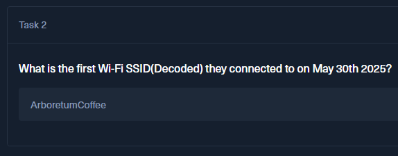
Getting the actual encoded SSID values
From the task text, it sounds like I was supposed to get an encoded SSID value, but this one was just plaintext. There are a few keys in which the SSID of a network can be found, and I know of one that stores it in an encoded format.
RECmd.exe -f C:\Users\malware\Desktop\challs\WhyFind\KAPEOUT\C\Windows\System32\config\SYSTEM --kn \ControlSet001\Services\Tcpip\Parameters\Interfaces

This key contains a list of GUIDs, which correspond to network interfaces existing on the machine. Again, there are two GUIDs with a last write time on the 30th of May.
RECmd.exe -f C:\Users\malware\Desktop\challs\WhyFind\KAPEOUT\C\Windows\System32\config\SYSTEM --kn \ControlSet001\Services\Tcpip\Parameters\Interfaces\{18c11dbd-93ab-4ca9-a804-4f4475da25b8}
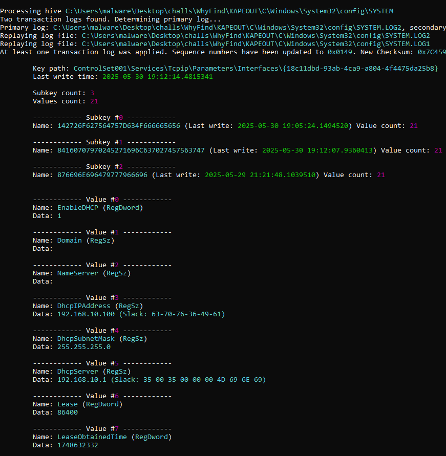
In this key, I can see lots of information about the interface itself. For example, whether DHCP is enabled, the time when its DHCP lease was obtained/terminated, the DHCP server IP, the IP this machine has received from the DHCP server, and much more.
The most important subkeys are the 3 at the top. These look like hex-encoded values, but trying to decode them returns garbage like .'&ö'VGWÖ4öffVV. This is because these hex values are actually stored in a weird, flipped way.
If I were to take the 142726F627564757D634F666665656 hex value, and flip every nibble pair to reverse the values(14 -> 41, 27 -> 72), the new hex value will decode into something readable. I'll create a simple Python script to automate this process.
# hex.py
hex_input = input("Enter a hex string: ")
flipped = ""
for i in range(0, len(hex_input), 2):
pair = hex_input[i:i+2]
if len(pair) == 2:
flipped += pair[1] + pair[0]
else:
flipped += pair
print("Flipped hex string:", flipped)
byte_array = bytearray.fromhex(flipped)
print("Converted ASCII value:", byte_array.decode())
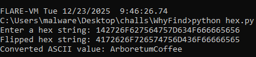
Task 3
When did the system obtain a lease for the network?
The ArboretumCoffee subkey contains a similar set of values as the interface. The LeaseObtainedTime value is stored in an epoch format.
RECmd.exe -f C:\Users\malware\Desktop\challs\WhyFind\KAPEOUT\C\Windows\System32\config\SYSTEM --kn \ControlSet001\Services\Tcpip\Parameters\Interfaces\{18c11dbd-93ab-4ca9-a804-4f4475da25b8}\142726F627564757D634F666665656
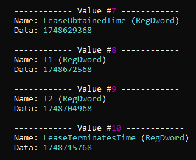
I'll go to https://www.epochconverter.com/ to convert this date to a human-readable date.
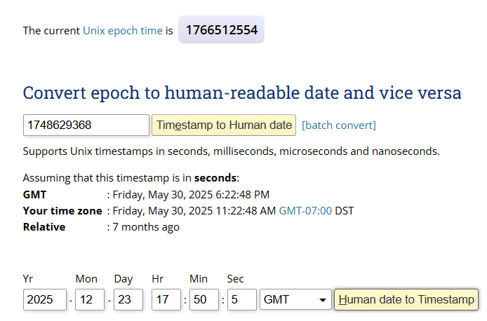
Task 4
What IP address did the device receive when connecting to the café?
This information is located under the same subkey, under the DhcpIpAddress value.
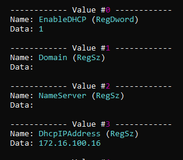
It's the address that the device received from the DHCP server after connecting to the network.

Task 5
What was the BSSID (MAC address) of the access point they connected to at the café?
This is where the Microsoft\Windows NT\CurrentVersion\NetworkList\Signatures registry key comes in. I've talked about network signatures before, and this is precisely where they are stored.
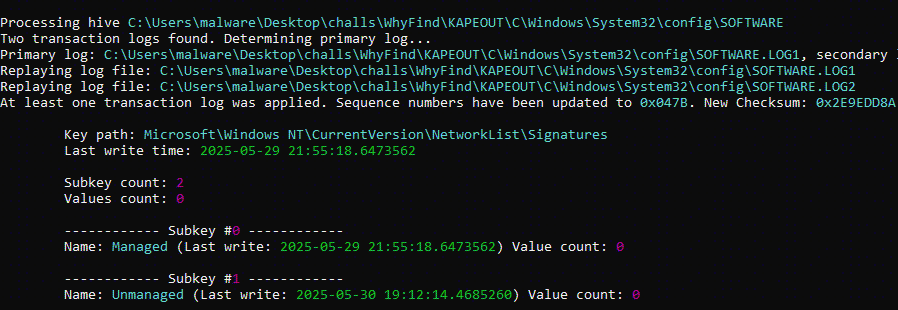
Inside, there are 2 subkeys: unmanaged and managed. Managed signatures are for corporate networks managed by external policies(Active Directory Group Policies). Unmanaged signatures are for non-domain connections like home networks, cafe networks, and things alike.
RECmd.exe -f C:\Users\malware\Desktop\challs\WhyFind\KAPEOUT\C\Windows\System32\config\SOFTWARE --kn "\Microsoft\Windows NT\CurrentVersion\NetworkList\Signatures\unmanaged"
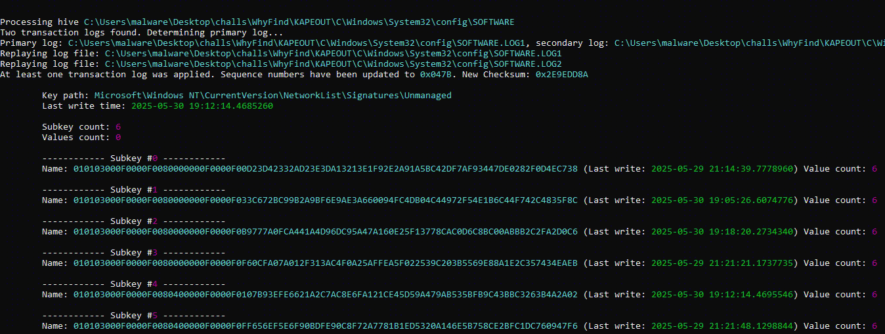
There are 6 subkeys under the unmanaged key. Each single one of them corresponds to a different network profile. Since I already know the WiFi name, I'll just search for its appearance throughout the whole hive. Perhaps it'll allow me to gather some additional intel while I'm at it.
RECmd.exe -f C:\Users\malware\Desktop\challs\WhyFind\KAPEOUT\C\Windows\System32\config\SOFTWARE --sa "ArboretumCoffe"
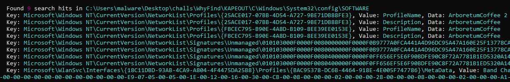
Interesting! Not only have I found the network signature and profile for ArboretumCoffee 2, but also for the original ArboretumCoffee network. Now I'll confirm whether my thoughts about them connecting to a new device are correct by checking out the previously unnoticed keys.
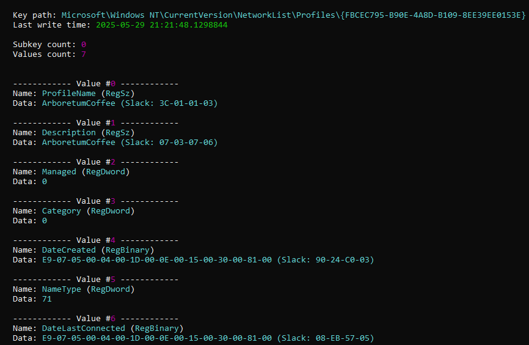
The suspect has connected to the cafe network for the first time at 2025-05-29 21:21:48, that is 1 day before the day my investigation was focused on.
RECmd.exe -f C:\Users\malware\Desktop\challs\WhyFind\KAPEOUT\C\Windows\System32\config\SOFTWARE --kn "Microsoft\Windows NT\CurrentVersion\NetworkList\Signatures\Unmanaged\010103...0947F6
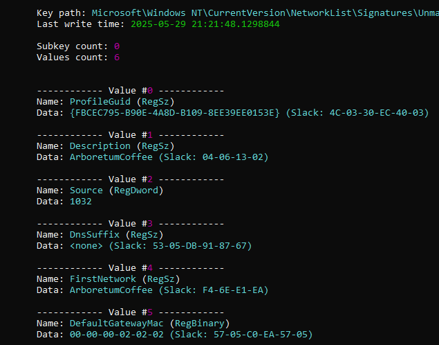
And this is the signature of the ArboretumCoffee network profile. I'll take note of the BSSID(MAC Address) at the bottom, as with this address, I can identify the device's manufacturer.
https://maclookup.app/
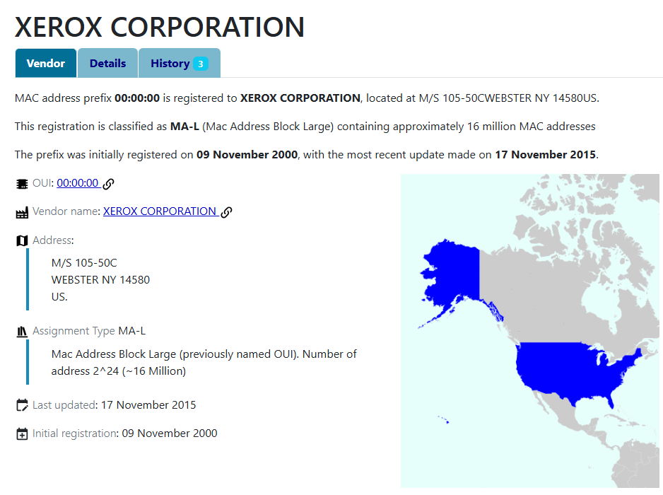
This device was manufactured by Xerox. Now I'll look at the ArboretumCoffee 2 signature and compare the BSSIDs. I'm 100% sure that they will differ completely.
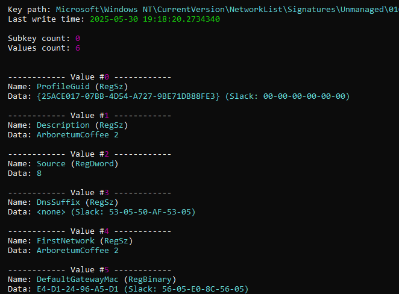
As expected, they are completely different. I'll check this OUI(Object Unique Identifier) as well.
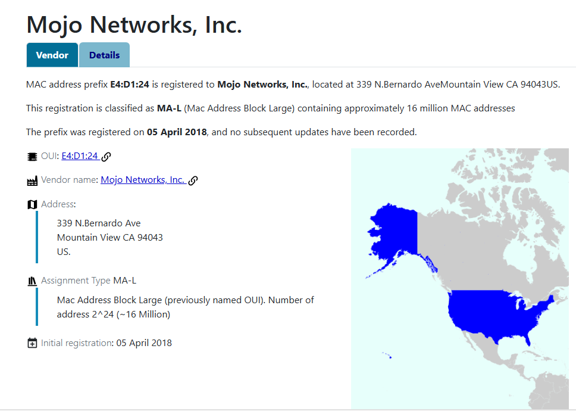

Task 6
It looks like they started some sort of manifesto at the café, what is the name of the file they started to write?
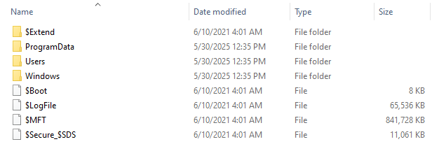
The $MFT journal was captured in the KAPE output. The $UsnJournal ($J) also exists within the $Extend directory, in case I need a bit more insight into the file events.
MFTECmd.exe -f KAPEOUT\C\$MFT --csv mftout
This will parse the journal and output a nice CSV file in the mftout directory. Usually, I'd just dive into the output and CTRL-F for any file listings with a date after the suspect had connected to the network 2025-05-30 18:22:42, but this time I will use PowerShell for this.
First, I'll create a datetime object with the connection date as the value.
$date = [datetime]"2025-05-30 18:22:49"
Then I'll use a simple PowerShell script that finds all .txt files, checks whether their creation date is after the one stored in the $date variable, and grabs the data I want from these entries.
Import-Csv '.\mftout\20251223225631_MFTECmd_$MFT_Output.csv' | Where-Object {$_.Extension -eq ".txt" -and [datetime]$_.Created0x10 -gt $date} | Select-Object EntryNumber, SequenceNumber, InUse, FileName, Created0x10, Created0x30, ParentPath | Out-GridView
I used both Created0x10 and 0x30, because while both ideally show the timestamp, 0x10 is a user-level value used in the command prompt(dir) and Windows Explorer, and can be easily modified by "timestomping" tools. 0x30 is a system-level timestamp controlled by the kernel, created when a file is first named or renamed, and as such, it is very difficult to change. This can only be seen by parsing the $MFT journal.
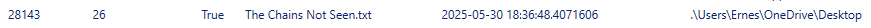
This file caught my attention. Not only does it match with the computer name, but it was also created on the user's desktop.
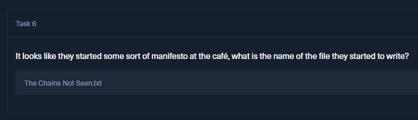
Task 7
What is the last sentence of the manifesto?
The InUse value of this file in $MFT is true, which means that I might be able to recover its contents. I've also grabbed the Entry and Sequence numbers, which I'll use now to recover the file contents.
MFTECmd.exe -f KAPEOUT\C\$MFT --de 28143-26
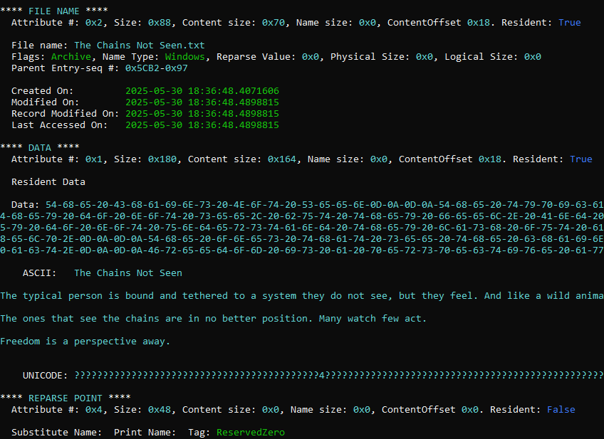
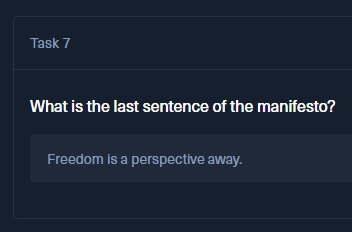
Task 8
They started their research by watching a YouTube video of a speech, what is the name of the speech?
I'll start by looking at the Microsoft Edge database files. They are located under C\Users\Ernes\AppData\Local\Microsoft\Edge\User Data\Default
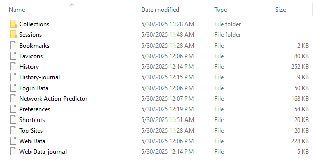
The history database is quite big, indicating that Edge was in use prior to the device being seized. I will use SQLEcmd to extract data from this SQLite database.
SQLECmd.exe -f "C:\Users\malware\Desktop\challs\WhyFind\KAPEOUT\C\Users\Ernes\AppData\Local\Microsoft\Edge\User Data\Default\History" --csv mftout
Afterwards, I'll use a PowerShell command to grab a few fields from the CSV file.
Import-Csv '.\mftout\20251224003606117007_ChromiumBrowser_HistoryVisits_1f37cc07-2b10-4c80-b845-84708e4f7429.csv' | Select-Object "LastVisitedTime (UTC)", URLtitle, URL | Out-GridView
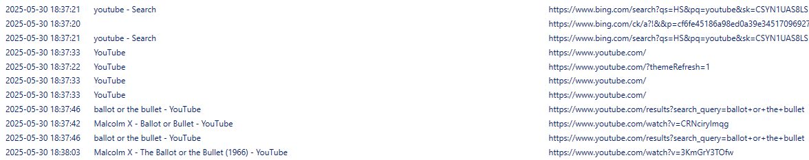
I can see that the last YouTube-related record points to a video titled Malcolm X - The Ballot or the Bullet
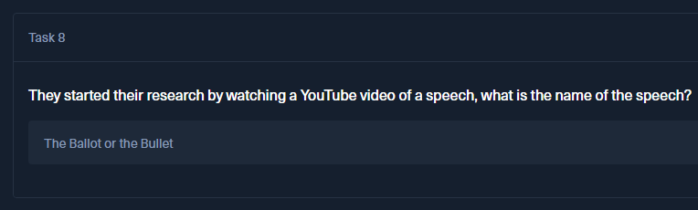
Task 9
They continued their research by looking up a book on Wikipedia, what was the title of the book?
Immediately after watching the video, the suspect searched for the phrase iron heel and found a Wikipedia page related to the book.
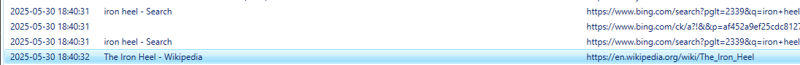
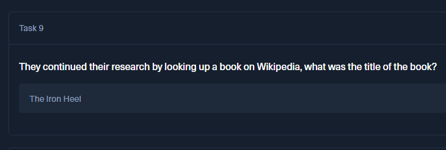
Task 10
What was the last thing they downloaded before leaving the café?
SQLEcmd creates 3 .csv files from a history file. A keyword search list, a downloads list, and a browsing history list. I can use the same command as above with the download list to get every file the suspect had downloaded through Edge.
Import-Csv '.\mftout\20251224003604897496_ChromiumBrowser_Downloads_0b575bcf-ade3-44e5-8162-eb52a96c2b06.csv' | Select-Object EndTime, TargetPath, OriginalMIMEType, TotalBytes, DownloadURL
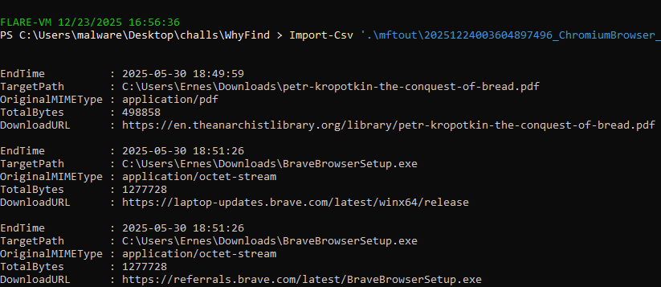
I can see that the last file downloaded via Edge is the Brave browser executable.
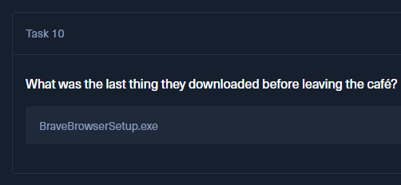
Task 11
When investigating changes to network profiles on a Windows system, which event log would you examine to find entries related to these profile-specific events, using event IDs such as 10000 or 10001?
For network profiles specifically, the most appropriate event log to examine solely would be Microsoft-Windows-NetworkProfile%4Operational. As for the mentioned event IDs, they correspond to 10000: Network Connected and 10001: Network Disconnected
I'll look through the logfile with Chainsaw to confirm this.
chainsaw.exe search arboretumcoffee -i "C:\Users\malware\Desktop\challs\WhyFind\KAPEOUT\C\Windows\System32\winevt\logs\Microsoft-Windows-NetworkProfile%4Operational.evtx"
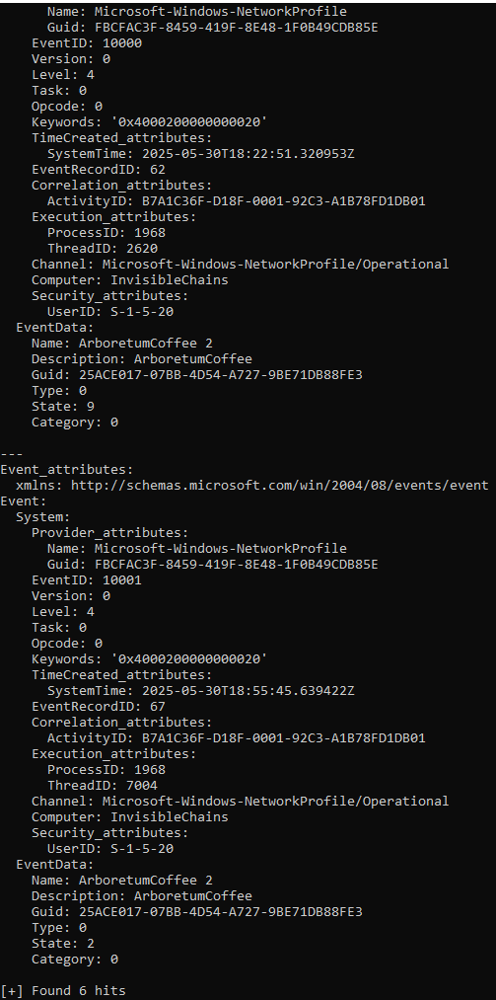
There are 6 events for both ArboretumCoffee SSIDs. 3 of each ID.
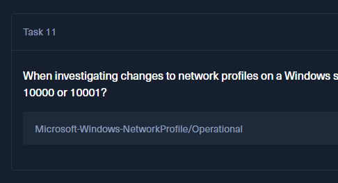
Task 12
Using the logs from the previous answer, when did they disconnect and leave the first café?
Unintentionally, this has already been answered while confirming my thoughts in task 11. The timestamp for this is the SystemTime timestamp of the last 10001 event related to the ArboretumCoffee network, 2025-05-30T18:55:45.639422Z
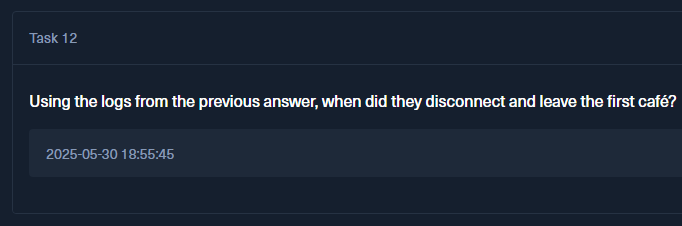
Task 13
Using the same logs, when did the user arrive at the second café?
This time, I'll mix chainsaw with PowerShell to find the answer. I'll filter the logfile so that only Event IDs 10000 will remain, and I'll use Select-String to filter for the 2025-05-30 date.
chainsaw.exe search -t "Event.System.EventID: =10000" "C:\Users\malware\Desktop\challs\WhyFind\KAPEOUT\C\Windows\System32\winevt\logs\Microsoft-Windows-NetworkProfile%4Operational.evtx" | Select-String '2025-05-30T' -Context 17,17
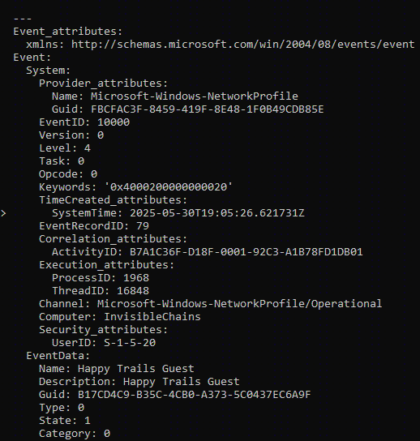
This is the first appearance of the Happy Trails Guest network. It's worth noting that the SSID doesn't require any decoding here.
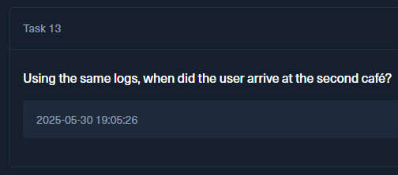
Task 14
What is the SSID(decoded) of the second Wi-Fi they connected to on May 30th 2025?
This question has already been answered while solving task 13.
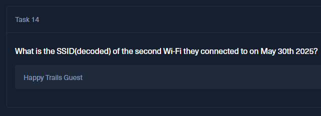
Task 15
What IP address did the device receive when connecting to the second café?
Back to the SYSTEM hive and the registry, I'll use my hex.py flipper script to reveal the remaining encoded network names.
RECmd.exe -f C:\Users\malware\Desktop\challs\WhyFind\KAPEOUT\C\Windows\System32\config\SYSTEM --kn "\ControlSet001\Services\Tcpip\Parameters\Interfaces\{18c11dbd-93ab-4ca9-a804-4f4475da25b8}"
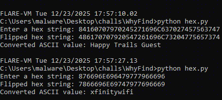
The second hex-encoded string from the list decodes to the newly discovered SSID. Under this subkey, I'll find the information necessary to answer this and the next question.
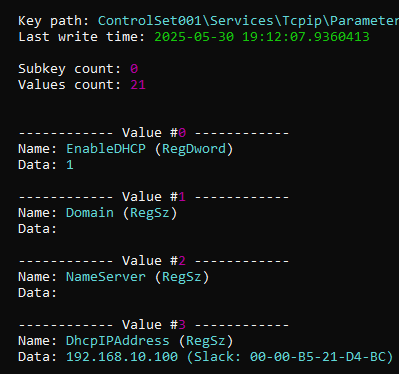
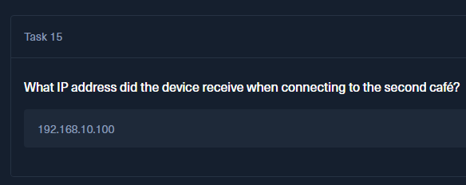
Task 16
When did the system obtain a lease for the second network?
From the same key, I'll grab the LeaseObtainedTime value, which is 1748631962.
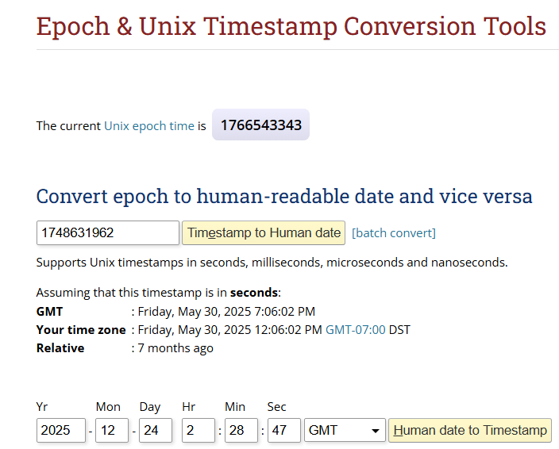
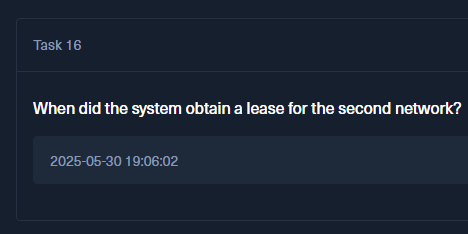
Task 17
Just like with the first network, I'll search through the SOFTWARE hive for any appearances of the target SSID.
RECmd.exe -f C:\Users\malware\Desktop\challs\WhyFind\KAPEOUT\C\Windows\System32\config\SOFTWARE --sa "Happy Trails Guest"
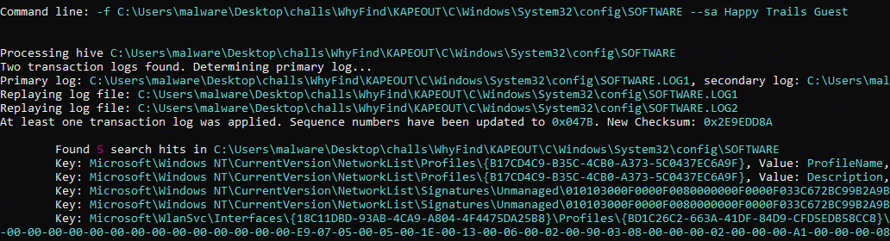
This time, there are no numbered SSIDs, meaning that the suspect has most likely not connected to this network before(although these tracks can be cleaned up).
RECmd.exe -f C:\Users\malware\Desktop\challs\WhyFind\KAPEOUT\C\Windows\System32\config\SOFTWARE --kn "Microsoft\Windows NT\CurrentVersion\NetworkList\Signatures\Unmanaged\010103...835F8C"
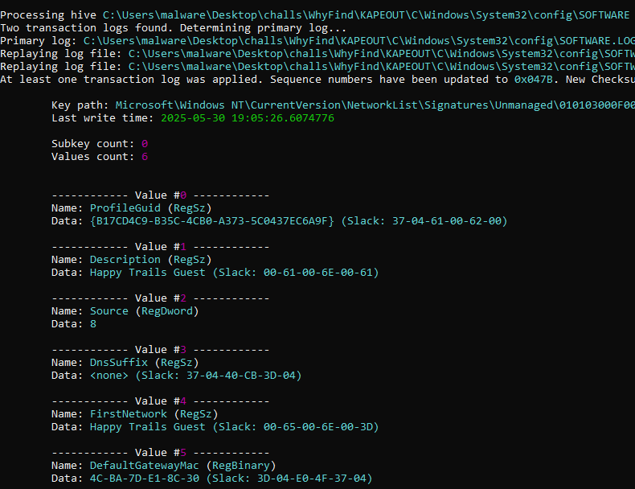
I'll use this MAC to discover this device's manufacturer on https://maclookup.app
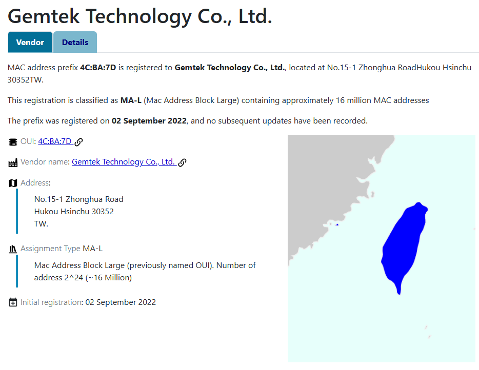
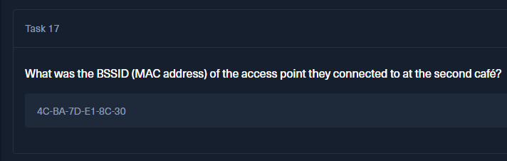
Task 18
What was the first thing the user downloaded at the second café?
The Brave browser executable was the last file downloaded via Edge. The suspect must've started using Brave from that point onwards.
\C\Users\Ernes\AppData\Local\BraveSoftware\Brave-Browser\User Data\Default
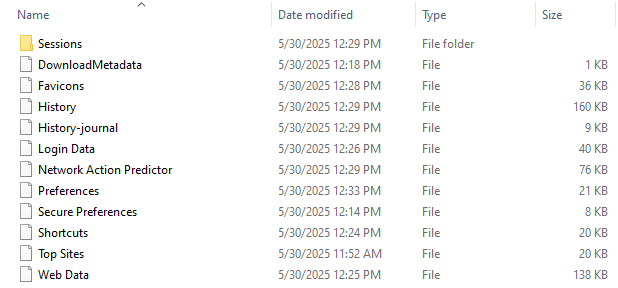
I'll use SQLEcmd to parse the history database, just like earlier with MS Edge.
SQLECmd.exe -f "C:\Users\malware\Desktop\challs\WhyFind\KAPEOUT\C\Users\Ernes\AppData\Local\BraveSoftware\Brave-Browser\User Data\Default" --csv mftout
I will parse the downloads CSV file with PowerShell.
Import-Csv '.\mftout\20251224023147591342_ChromiumBrowser_Downloads_0b575bcf-ade3-44e5-8162-eb52a96c2b06.csv' | Select-Object EndTime, TargetPath, OriginalMIMEType, TotalBytes, DownloadURL
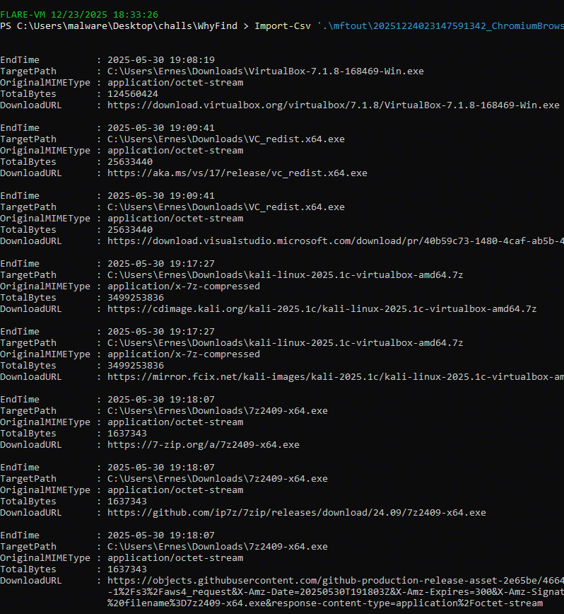
The first object downloaded is the VirtualBox installer.
Task 19
What online forum/social media site did they visit?
I'll look through the browsing history stored within the parsed Brave DB.
Import-Csv '.\mftout\20251224023147833504_ChromiumBrowser_HistoryVisits_1f37cc07-2b10-4c80-b845-84708e4f7429.csv' | Select-Object "LastVisitedTime (UTC)", URLtitle, URL
The suspect visited quite a few websites, from which 3 stand out the most. Kali.org, the 7-Zip community, and Reddit. The last one sounds like the most matching answer for the question.
Task 20
What was their username on the site?
In the same directory where the History db is located, thereis a Login Data database as well. However, trying to parse it with SQLEcmd will return an error.
Instead, I'll use the DB Browser to investigate this database.
https://sqlitebrowser.org/
The suspect was browsing Reddit with the username FinanciallyFree3636
Task 21
What was the name of the VM they created?
From the Brave browsing data, I have the timestamp of when the user visited the Kali Linux website. They could not have created a VM earlier than 2025-05-30 19:14:52, and knowing this will make it way easier to search for artifacts related to VirtualBox.
The first thing that came to my mind was VDI (Virtual Disk Image) files, which are files left on the system after a virtual machine has been created. However, the attacker had downloaded a VDI directly from the Kali Linux website. This file will have a known name related to the distributed system, which makes it less valuable for this challenge.
Aside from the VDI files, there are the .vbox files, which are the configuration files for Vbox machines. These store data in an XML format, and they contain things like the machine name, OS type, and its settings.
Import-Csv '.\mftout\20251223225631_MFTECmd_$MFT_Output.csv' | Where-Object {($_.Extension -eq ".vdi" -or $_.Extension -eq ".vbox") -and ([datetime]$_.Created0x10 -gt $date)} | Select-Object EntryNumber, SequenceNumber, InUse, FileName, Created0x10, Created0x30, ParentPath
This command had to be modified slightly to accomodate for the second extension check. The parentheses were added because normally, -and takes precedence over -or, causing it to display every every file matching the timestamp. By adding the parentheses, I ensured that the extension check will happen first, no matter what.

And here's the machine's name. It is LastHope, which will be the answer to question 22.
Task 22
What street was the first café on?
The first SSID I've discovered looked like it could be a name for a cafe. I'll try searching it online, as it is often the case that the local networks have the same or a similar name as the establishment that uses them.
Bingo! The Arboretum Coffee cafe is located on the W Prospect Rd street in Fort Collins, Colorado, USA.
Task 23
Investigators may want to follow up on the Wi-Fi credentials used at the first café the suspect visited. Which file stores the authentication details (including the encrypted password) for the first network?
This information is stored in the WlanSvc registry key, under the specific interface GUID-subkey Microsoft\WlanSvc\Interfaces\{18C11DBD-93AB-4CA9-A804-4F4475DA25B8}
At the bottom, under the ProfileList value, I can see a few GUIDs. Windows stores network settings in these files, each file corresponding to a different network. By following the same path in Windows Explorer, I'll be able to reach the actual configuration files that contain what I'm looking for.
C\ProgramData\Microsoft\Wlansvc\Profiles\Interfaces\{18C11DBD-93AB-4CA9-A804-4F4475DA25B8}.xml
Notice how one of the XML files is 1KB bigger than the others. This is most likely a difference in the authentication mode and the values it brings.
<WLANProfile xmlns="http://www.microsoft.com/networking/WLAN/profile/v1">
<name>ArboretumCoffee</name>
<SSIDConfig>
<SSID>
<hex>4172626F726574756D436F66666565</hex>
<name>ArboretumCoffee</name>
</SSID>
</SSIDConfig>
<connectionType>ESS</connectionType>
<connectionMode>manual</connectionMode>
<MSM>
<security>
<authEncryption>
<authentication>WPA2PSK</authentication>
<encryption>AES</encryption>
<useOneX>false</useOneX>
</authEncryption>
<sharedKey>
<keyType>passPhrase</keyType>
<protected>true</protected>
<keyMaterial>|KEY_MATERIAL|</keyMaterial>
</sharedKey>
</security>
</MSM>
<MacRandomization xmlns="http://www.microsoft.com/networking/WLAN/profile/v3">
<enableRandomization>false</enableRandomization>
<randomizationSeed>2228671806</randomizationSeed>
</MacRandomization>
</WLANProfile>
This is the first network, and as suspected, it uses a different authentication mode than the others. This one uses WPA2PSK, while the others are just open authentication without a password. The key material here is a giant DPAPI-encrypted blob, which contains the WiFi password.
The decryption process would look like this:
-
Running
secretsdump.pyagainst the SYSTEM hive to get the DPAPI Machine Key. -
Using
dpapi.pyagainst the system master keyProtect/S-1-5-18/User/GUIDwith the machine key from step 1 to decrypt the master key. -
Using
dpapi.pyagain with the unprotected masterkey to decrypt the blob and uncover the password.
I could decrypt this, but the only things missing are the SYSTEM profile and master key, which weren't captured in the KAPE output. Without them, the decryption fails at step 2.
Task 24
What authentication method was used to connect to the first café's Wi-Fi?
This was already answered while solving task 23. The answer is WPA2PSK
Solved!